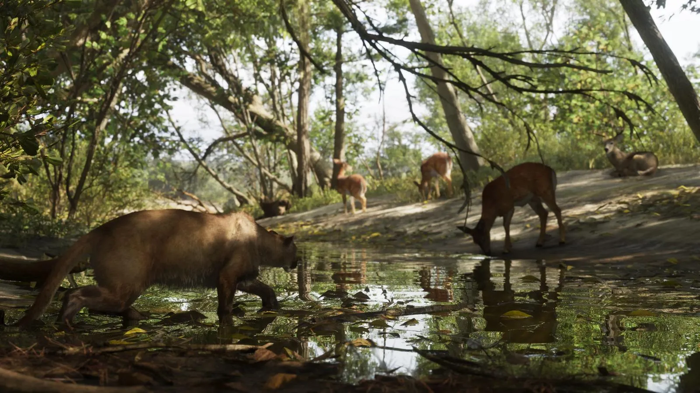
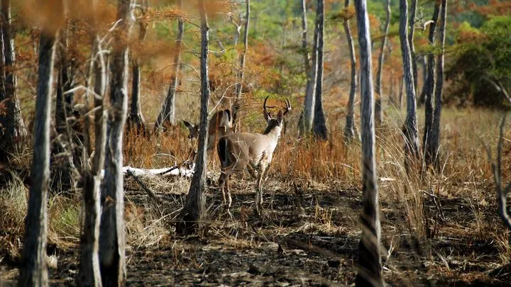
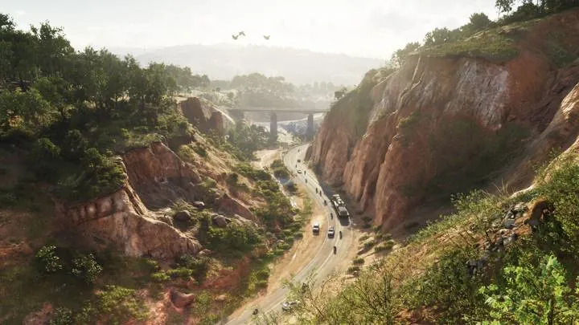
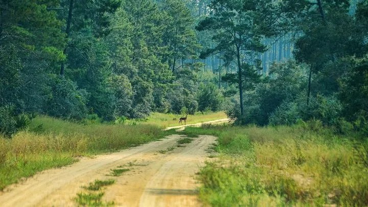

// Справочник · Животные
Олени и пума в GTA 6
Обновлено:

В лесах Mount Kalaga живут олени и пума — на официальном скриншоте хищник крадётся к водопою.
Что видно в кадре
- Олени у водопоя.
- Пума в тени.
Подробно
На официальном скриншоте Mount Kalaga олени пьют у воды, а в тени к ним подкрадывается пума. Rockstar обещает живую экосистему, где звери охотятся друг на друга.
По подсчёту GTABase, в лесах замечены также рысь, кабан, лиса, енот и белка.
Где посмотреть
Таймкоды — чтобы найти момент в официальном видео Rockstar.
| Где | Что в кадре |
|---|---|
| Официальный скриншот Mount Kalaga | Олени у водопоя, пума в тени |
Олени и пума и реальность

vsСкопированоОлени Леониды и белохвостый оленьПрирода · Mount Kalaga


vsПо мотивамMount Kalaga и леса ФлоридыПрирода · Mount Kalaga
Кадры и названия: Rockstar Games — трейлеры GTA VI, «Расширенный показ» (An Extended Look), официальные скриншоты. После релиза 19 ноября 2026 года дополним страницу данными из игры.
Короткие ролики: GTA 6 и реальная жизнь
Каждый день — одно сравнение: кадр игры рядом с реальным фото. Подписывайтесь:
YouTubeInstagramTikTok